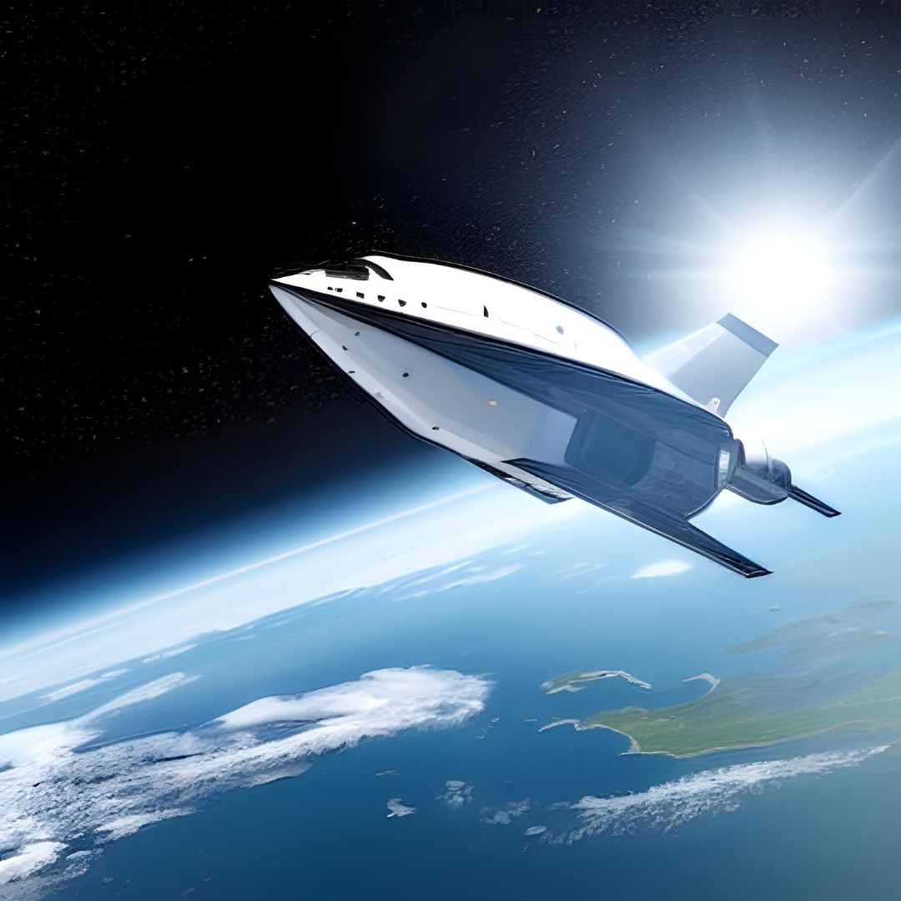

Sam and Leia are two kids who really love space! Their dad is an expert in building spaceships, and he sometimes lets them help out. One day, their dad is building a super-secret spaceship called the AstroJet, and he tells Sam and Leia that they can't go inside because it is off-limits.
But Sam really wants to see what is inside the AstroJet, so he sneaks aboard with his dog Max. When Leia finds out, she gets worried but decides to follow them anyway. Once they are inside all inside, Sam and Leia start arguing about whether they should leave or stay.
Suddenly, Leia accidentally pulls a lever, and the spaceship starts flying into space! The spaceship seems to be in control and picks them up and puts them in seats. How did their dad make this?! As they're flying through space, they see a comet coming towards them! Will they be able to avoid it and leave untouched? What kind of adventures will they have? Only time will tell! Don't forget to come watch us later!
|

|
>